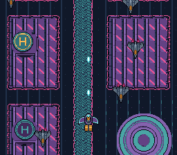

|
OpenSNES
Modern Open-Source SNES Development SDK
|
|
OpenSNES
Modern Open-Source SNES Development SDK
|
A vertical shoot 'em up: Kit's delivery glider over the city at night, against the security's hunters. The city scrolls down on BG1 and wraps every 512 lines; the glider, a pool of hunters and Kit's shots are sprites, and a shot that meets a hunter takes both out.

| Input | Action |
|---|---|
| D-pad | move the glider |
| A | fire (a short cooldown between two shots) |
A shot despawns when its y goes below 0. The OAM holds y - 1 in eight bits, so y = 0 is written as 255, a line the PPU never shows: one step further and the shot would come back at the bottom of the screen for a frame. A hit is decided on the shot's centre, (8, 8) in its 16×16 sprite, falling inside the hunter's 20×20 box.
Produces shmup.sfc (LoROM, 256 KB).
| File | What | Made by |
|---|---|---|
| res/scene.png | the city from the sky, 256x512, wrapping vertically: two blocks of roofs either side of a canal, the round plaza, helipads | devtools/art_assets/shmup.py: the Mode 7 city's Wang tiles (PixelLab) laid out on a strip, pieces of backgrounds/aerial.png stamped on it |
| res/player.png | Kit's delivery glider from above | characters/glider.png (PixelLab), indexed |
| res/enemy.png | the security's hunter from above, nose up | characters/hunter.png (PixelLab), indexed |
| res/bullet.png | Kit's shot, an aqua capsule centred in 16x16 | assets/neo-lumen/ui/bolt.png (PixelLab), indexed |
python3 devtools/art_assets/build.py writes the four again (contributors).
console, dma, background, asset, sprite, input.
CC0, like the rest of the Néo-Lumen assets (assets/neo-lumen/README.md).